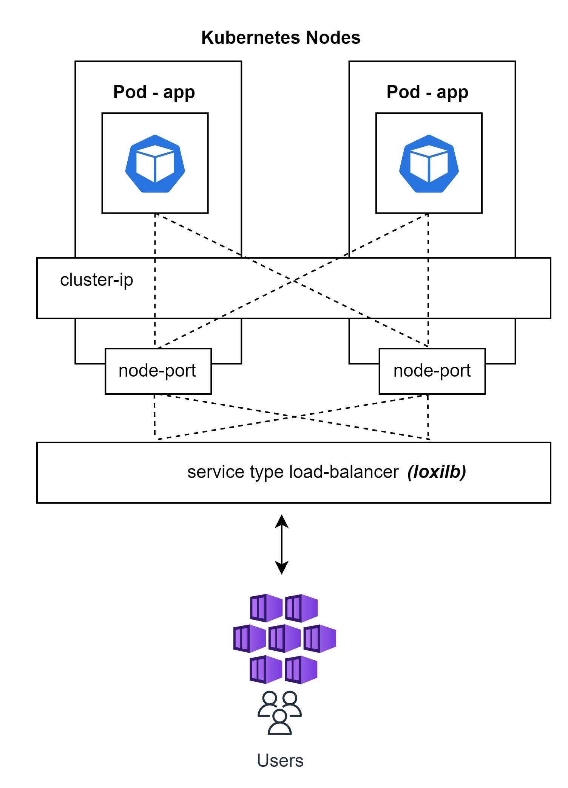

Welcome to loxilb documentation


Background
loxilb started as a project to ease deployments of cloud-native/kubernetes workloads for the edge. When we deploy services in public clouds like AWS/GCP, the services becomes easily accessible or exported to the outside world. The public cloud providers, usually by default, associate load-balancer instances for incoming requests to these services to ensure everything is quite smooth.
However, for on-prem and edge deployments, there is no service type - external load balancer provider by default. For a long time, MetalLB originating from Google was the only choice for the needy. But edge services are a different ball game altogether due to the fact that there are so many exotic protocols in play like GTP, SCTP, SRv6 etc and integrating everything into a seamlessly working solution has been quite difficult.
loxilb dev team was approached by many people who wanted to solve this problem. As a first step to solve the problem, it became apparent that networking stack provided by Linux kernel, although very solid, really lacked the development process agility to quickly provide support for a wide variety of permutations and combinations of protocols and stateful load-balancing on them. Our search led us to the awesome tech developed by the Linux community - eBPF. The flexibility to introduce new functionality into the OS Kernel as a safe sandbox program was a complete fit to our design philosophy. It also does not need any dedicated CPU cores which makes it perfect for designing energy-efficient edge architectures.
What is loxilb
loxilb is an open source cloud-native load-balancer based on GoLang/eBPF with the goal of achieving cross-compatibity across a wide range of on-prem, public-cloud or hybrid K8s environments.
Kubernetes with loxilb
Kubernetes defines many service constructs like cluster-ip, node-port, load-balancer etc for pod to pod, pod to service and service from outside communication.

All these services are provided by load-balancers/proxies operating at Layer4/Layer7. Due to Kubernetes's highly modular architecture, these services can be provided by different software modules. For example, kube-proxy is used to provide cluster-ip and node-port services by default.
Service type load-balancer is usually provided by public cloud-provider as a managed service. But for on-prem and self-managed clusers, there are only a few good options. loxilb provides service type load-balancer as its main use-case.
Additionally, loxilb can also support cluster-ip and node-port services and thereby providing end-to-end connectivity for Kubernetes.
Why choose loxilb?
Performsmuch better compared to its competitors across various architectures- Utitlizes ebpf which makes it
flexibleas well ascustomizable - Advanced
quality of servicefor workloads (per LB, per end-point or per client) - Works with
anyKubernetes distribution/CNI - k8s/k3s/k0s/kind/OpenShift + Calico/Flannel/Cilium/Weave/Multus etc - Extensive support for
SCTP workloads(with multi-homing) on k8s - Dual stack with
NAT66, NAT64support for k8s - k8s
multi-clustersupport (planned 🚧) - Runs in
anycloud (public cloud/on-prem) orstandaloneenvironments
Overall features of loxilb
- L4/NAT stateful loadbalancer
- NAT44, NAT66, NAT64 with One-ARM, FullNAT, DSR etc
- Support for TCP, UDP, SCTP (w/ multi-homing), QUIC, FTP, TFTP etc
- High-availability support with hitless/maglev/cgnat clustering
- Extensive and scalable end-point liveness probes for cloud-native environments
- Stateful firewalling and IPSEC/Wireguard support
- Optimized implementation for features like Conntrack, QoS etc
- Full compatibility for ipvs (ipvs policies can be auto inherited)
- Policy oriented L7 proxy support - HTTP1.0, 1.1, 2.0 etc (planned 🚧)
Components of loxilb
- GoLang based control plane components
- A scalable/efficient eBPF based data-path implementation
- Integrated goBGP based routing stack
- A kubernetes agent kube-loxilb written in Go
Layer4 vs Layer7
loxilb works as a L4 load-balancer/service-mesh by default. Although it provides great performance, at times, L7 load-balancing/proxy might be necessary in K8s. There are many good L7 proxies already available for k8s. Still, we are working on providing a great L7 solution natively in eBPF. It is a tough endeavor one which should reap great benefits once completed. Please keep an eye for updates on this.
Telco-Cloud with loxilb
For deploying telco-cloud with cloud-native functions, loxilb can be used as a SCP(service communication proxy). SCP is nothing but a glorified term for Kubernetes load-balancing. But telco-cloud requires load-balancing across various interfaces/standards like N2, N4, E2(ORAN), S6x, 5GLAN, GTP etc. Each of these interfaces present its own unique challenges(and DPI) for load-balancing, which loxilb aims to solve e.g.:
- N4 requires PFCP level session-intelligence
- N2 requires NGAP parsing capability
- S6x requires Diameter/SCTP multi-homing LB support
- MEC use-cases might require UL-CL understanding
- Hitless failover support might be essential for mission-critical applications
- E2 might require SCTP-LB with OpenVPN bundled together
How-To Guides
- How-To : Deploy loxilb in K8s with kube-loxilb
- How-To : Service-group zones with loxilb
- How-To : High-availability with loxilb
- How-To : Manual build/run
- How-To : Run loxilb in standalone mode
- How-To : loxicmd config
- How-To : debug
- How-To : Access end-points outside K8s
Getting started with different K8s distributions & tools
loxilb as ext-cluster pod
- K3s : loxilb with default flannel
- K3s : loxilb with calico
- K3s : loxilb with cilium
- K0s : loxilb with default kube-router networking
loxilb as in-cluster pod
loxilb as service-proxy
Knowledge-Base
- What is eBPF
- What is k8s service - load-balancer
- Architecture in brief
- Code organization
- eBPF internals of loxilb
- What are loxilb NAT Modes
- loxilb load-balancer algorithms
- Developer's guide to loxicmd
- Developer's guide to loxilb API
- API Reference - loxilb web-Api
- Performance Reports
- Development Roadmap
- Contribute
- System Requirements
- Frequenctly Asked Questions- FAQs
Blogs
- K8s - Elevating cluster networking
- eBPF - Map sync using Go
- K8s in-cluster service LB with LoxiLB
- K8s - Introducing SCTP Multihoming with LoxiLB
- Load-balancer performance comparison on Amazon Graviton2
- Hyperscale anycast load balancing with HA
- Getting started with loxilb on Amazon EKS
- K8s - Deploying "hitless" Load-balancing
- Oracle Cloud - Hitless HA load balancing
- Ipv6 migration in Kubernetes made easy
Community Posts
- 5G SCTP LoadBalancer Using loxilb
- 5G Uplink Classifier Using loxilb
- K3s - Using loxilb as external service lb
- K8s - Bringing load-balancing to multus workloads with loxilb
- 5G SCTP LoadBalancer Using LoxiLB on free5GC
- Kubernetes Services: Achieving optimal performance is elusive
Latest CICD Status
| Features(Ubuntu20.04) | Features(Ubuntu22.04) |
|---|---|
| K3s Tests | K8s Cluster Tests | EKS Test |
|---|---|---|